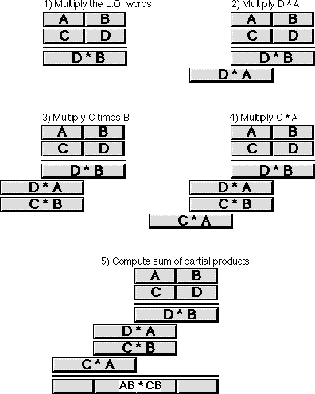
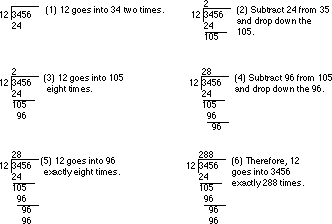
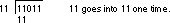
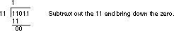
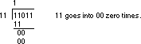
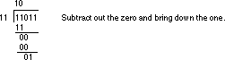
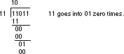
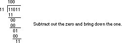
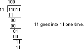
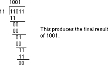

|
Table of Content | Chapter Nine (Part 5) |
|
Table of Content | Chapter Nine (Part 5) |
| CHAPTER NINE: ARITHMETIC AND LOGICAL OPERATIONS (Part 4) |
| 9.3.4 - Extended
Precision Multiplication 9.3.5 - Extended Precision Division |
Although a 16x16 or 32x32 multiply is usually sufficient,
there are times when you may want to multiply larger values together. You will use the
80x86 single operand mul and imul instructions for extended
precision multiplication.
Not surprisingly (in view of how adc and sbb
work), you use the same techniques to perform extended precision multiplication on
the 80x86 that you employ when manually multiplying two values.
Consider a simplified form of the way you perform multi-digit multiplication by hand:
1) Multiply the first two 2) Multiply 5*2:
digits together (5*3):
123 123
45 45
--- ---
15 15
10
3) Multiply 5*1: 4) 4*3:
123 123
45 45
--- ---
15 15
10 10
5 5
12
5) Multiply 4*2: 6) 4*1:
123 123
45 45
--- ---
15 15
10 10
5 5
12 12
8 8
4
7) Add all the partial products together:
123
45
---
15
10
5
12
8
4
------
5535
The 80x86 does extended precision multiplication in the same manner except that it works with bytes, words, and double words rather than digits. The figure below shows how this works.

Probably the most important thing to remember when performing an extended precision multiplication is that you must also perform a multiple precision addition at the same time. Adding up all the partial products requires several additions that will produce the result. The following listing demonstrates the proper way to multiply two 32 bit values on a 16 bit processor:
Note: Multiplier and Multiplicand
are 32 bit variables declared in the data segment via the dword directive.
Product is a 64 bit variable declared in the data segment via the qword directive.
Multiply proc near
push ax
push dx
push cx
push bx
; Multiply the L.O. word of Multiplier times Multiplicand:
mov ax, word ptr Multiplier
mov bx, ax ;Save Multiplier val
mul word ptr Multiplicand ;Multiply L.O. words
mov word ptr Product, ax ;Save partial product
mov cx, dx ;Save H.O. word
mov ax, bx ;Get Multiplier in BX
mul word ptr Multiplicand+2 ;Multiply L.O. * H.O.
add ax, cx ;Add partial product
adc dx, 0 ;Don't forget carry!
mov bx, ax ;Save partial product
mov cx, dx ; for now.
; Multiply the H.O. word of Multiplier times Multiplicand:
mov ax, word ptr Multiplier+2 ;Get H.O. Multiplier
mul word ptr Multiplicand ;Times L.O. word
add ax, bx ;Add partial product
mov word ptr product+2, ax ;Save partial product
adc cx, dx ;Add in carry/H.O.!
mov ax, word ptr Multiplier+2 ;Multiply the H.O.
mul word ptr Multiplicand+2 ; words together.
add ax, cx ;Add partial product
adc dx, 0 ;Don't forget carry!
mov word ptr Product+4, ax ;Save partial product
mov word ptr Product+6, dx
pop bx
pop cx
pop dx
pop ax
ret
Multiply endp
One thing you must keep in mind concerning this code, it only works for unsigned operands. Multiplication of signed operands appears in the exercises.
9.3.5 Extended Precision Division
You cannot synthesize a general n-bit/m-bit division
operation using the div and idiv instructions. Such an operation
must be performed using a sequence of shift and subtract instructions. Such an operation
is extremely messy. A less general operation, dividing an n bit quantity by a 32 bit (on
the 80386 or later) or 16 bit quantity is easily synthesized using the div instruction.
The following code demonstrates how to divide a 64 bit quantity by a 16 bit divisor,
producing a 64 bit quotient and a 16 bit remainder:
dseg segment para public 'DATA'
dividend dword 0FFFFFFFFh, 12345678h
divisor word 16
Quotient dword 0,0
Modulo word 0
dseg ends
cseg segment para public 'CODE'
assume cs:cseg, ds:dseg
; Divide a 64 bit quantity by a 16 bit quantity:
Divide64 proc near
mov ax, word ptr dividend+6
sub dx, dx
div divisor
mov word ptr Quotient+6, ax
mov ax, word ptr dividend+4
div divisor
mov word ptr Quotient+4, ax
mov ax, word ptr dividend+2
div divisor
mov word ptr Quotient+2, ax
mov ax, word ptr dividend
div divisor
mov word ptr Quotient, ax
mov Modulo, dx
ret
Divide64 endp
cseg ends
This code can be extended to any number of bits by simply
adding additional mov / div / mov instructions at the beginning of the
sequence. Of course, on the 80386 and later processors you can divide by a 32 bit value by
using edx and eax in the above sequence (with a few other
appropriate adjustments).
If you need to use a divisor larger than 16 bits (32 bits on an 80386 or later), you're going to have to implement the division using a shift and subtract strategy. Unfortunately, such algorithms are very slow. In this section we'll develop two division algorithms that operate on an arbitrary number of bits. The first is slow but easier to understand, the second is quite a bit faster (in general).
As for multiplication, the best way to understand how the computer performs division is to study how you were taught to perform long division by hand. Consider the operation 3456/12 and the steps you would take to manually perform this operation:

This algorithm is actually easier in binary since at each step you do not have to guess how many times 12 goes into the remainder nor do you have to multiply 12 by your guess to obtain the amount to subtract. At each step in the binary algorithm the divisor goes into the remainder exactly zero or one times. As an example, consider the division of 27 (11011) by three (11):
       
There is a novel way to implement this binary division algorithm that computes the quotient and the remainder at the same time. The algorithm is the following:
Quotient := Dividend; Remainder := 0; for i:= 1 to NumberBits do Remainder:Quotient := Remainder:Quotient SHL 1; if Remainder >= Divisor then Remainder := Remainder - Divisor; Quotient := Quotient + 1; endif endfor
NumberBits is the number of bits in the Remainder,
Quotient, Divisor, and Dividend variables. Note that the Quotient
:= Quotient + 1 statement sets the L.O. bit of Quotient to one since
this algorithm previously shifts Quotient one bit to the left. The 80x86 code
to implement this algorithm is
; Assume Dividend (and Quotient) is DX:AX, Divisor is in CX:BX,
; and Remainder is in SI:DI.
mov bp, 32 ;Count off 32 bits in BP
sub si, si ;Set remainder to zero
sub di, di
BitLoop: shl ax, 1 ;See the section on shifts
rcl dx, 1 ; that describes how this
rcl di, 1 ; 64 bit SHL operation works
rcl si, 1
cmp si, cx ;Compare H.O. words of Rem,
ja GoesInto ; Divisor.
jb TryNext
cmp di, bx ;Compare L.O. words.
jb TryNext
GoesInto: sub di, bx ;Remainder := Remainder -
sbb si, cx ; Divisor
inc ax ;Set L.O. bit of AX
TryNext: dec bp ;Repeat 32 times.
jne BitLoop
This code looks short and simple, but there are a few problems with it. First, it does not check for division by zero (it will produce the value 0FFFFFFFFh if you attempt to divide by zero), it only handles unsigned values, and it is very slow. Handling division by zero is very simple, just check the divisor against zero prior to running this code and return an appropriate error code if the divisor is zero. Dealing with signed values is equally simple, you'll see how to do that in a little bit. The performance of this algorithm, however, leaves a lot to be desired. Assuming one pass through the loop takes about 30 clock cycles[2], this algorithm would require almost 1,000 clock cycles to complete! That's an order of magnitude worse than the DIV/IDIV instructions on the 80x86 that are among the slowest instructions on the 80x86.
There is a technique you can use to boost the performance
of this division by a fair amount: check to see if the divisor variable really uses 32
bits. Often, even though the divisor is a 32 bit variable, the value itself fits just fine
into 16 bits (i.e., the H.O. word of Divisor is zero). In this special case,
that occurs frequently, you can use the DIV instruction which is much faster.
[2] This will vary depending upon your choice of processor.
|
Table of Content | Chapter Nine (Part 5) |
Chapter Nine: Arithmetic And Logical
Operations (Part 4)
27 SEP 1996